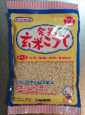
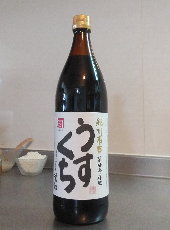
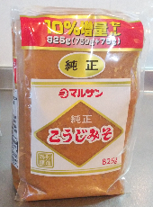
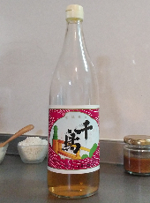
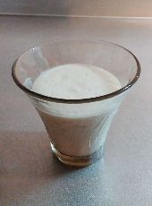

米麹
《原材料》
・お米
・麹
米麹にも種類がたくさんあります。生麹、乾燥麹、白米を使ったものと、玄米を使ったものなど、さまざまです。使いやすいのは、白米を使った乾燥麹。塩麹、甘酒、醤油、味噌、いろいろなものに使えます。
食料品店でよく見かけるのは伊勢惣さんの『みやここうじ』。私は地元の道の駅などで、地元産の米麹を購入することが多いです。玄米麹は、伊勢惣さんの『発芽玄米こうじ』を使っています。
醤油
《原材料》
・大豆
・小麦
・塩
・麹
醤油は、濃口と薄口があり、私はどちらも好きで、料理によって使い分けています。関西人なので、煮物や調理の味付けには薄口醤油を使うことが多く、お刺身やお豆腐にかけるなど、食卓で使う醤油は濃口を使っています。
最近は、ネットで見つけたカネイワ醤油さんの醤油を使っています。私のお勧めは昔ながらの木樽製法で作ったお醤油。無添加で、価格は少し高いのですが、コクがあってとっても美味しいです。
味噌
《原材料》
・大豆
・お米（米味噌の場合）
・麦（麦味噌の場合）
・塩
・麹
味噌は、米の混ざった米味噌や白みそ（西京味噌）、八丁味噌など大豆と麹と塩だけのもの、麦と麹を使った麦味噌もあります。私は米味噌と八丁味噌（赤みそ）が好きです。白みそも大好きですが、最近は自分で作ったおから味噌が、白みそ風味で美味しいのでお気に入りです。
味噌は口に合えばなんでもよい派だったんですが、今はマルサンの『純正こうじみそ』を使っています。安いのに美味しくて無添加。近くの食料品店で入手できて、お味噌汁、酢味噌、味噌煮、何に使っても美味しいお味噌です！
お酢
《原材料》
・お米と麹など（米酢の場合）
・果汁（果実酢の場合）
お酢は発酵がとても難しいそうで、米麹をアルコール発酵させてから、さらに酢酸発酵の後、熟成してやっと完成だそうです。種類も多く、穀物酢（米酢や黒酢など）、果実酢、酢酸発酵はしていないけれど、もろみ酢や梅酢、バルサミコ酢も美味しいです。
飲みやすいのは断然もろみ酢だと思います。沖縄ではじめてもろみ酢を飲んだ時は感動しました。料理に使うなら米酢。私はずーっと千鳥酢を使っています。村山造酢の京酢加茂千鳥（千鳥酢）の原材料は【米】と【酒粕】と書いてありました。一般的なお酢より少し濃くて深みがあり、癖もなく美味しいです。
甘酒
《原材料》
・お米と麹（麹甘酒の場合）
・酒粕と砂糖と水（酒粕甘酒の場合）
甘酒は、酒粕から作ったものと、米麹から作ったもの、二種類あります。私は酒粕から作った甘酒が好きで、米麹で作った甘酒は苦手だったのですが、米麹に炊き立ての白米を入れて作った甘酒は美味しい！ということに最近気づきました。
酒粕から作った甘酒で私が好きなのは、伊勢神宮の近く、おかげ横丁にある伊勢萬の『吟醸おかげさま』という日本酒の酒粕でつくった『伊勢の甘酒』です。冬に甘酒というイメージが強かったのですが、夏の冷えた甘酒がとっても美味しいので、伊勢へ行った際はぜひご賞味ください！